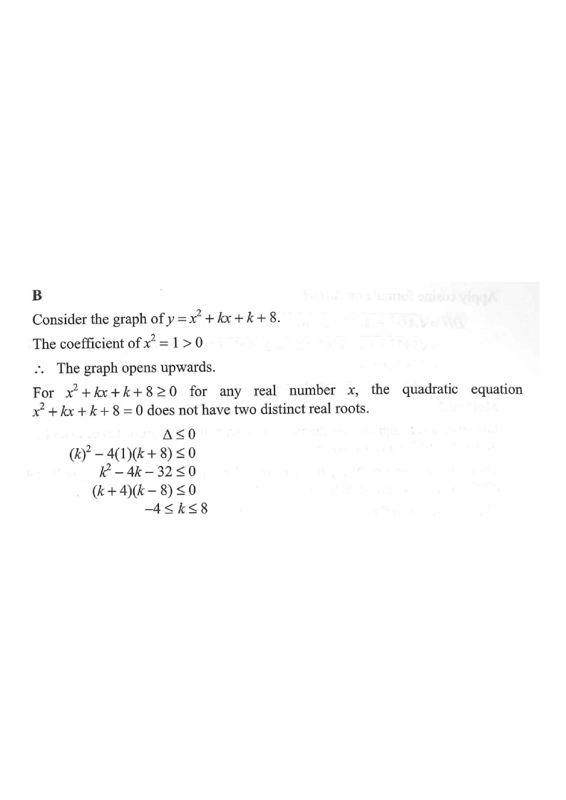

Step 1: The graph opens upwards (coefficient of $x^2$ is $1>0$).
HKDSE 2021 P2 · Q37Topic 9 · Inequalities
Let $k$ be a constant. Find the range of values of $k$ such that
$$x^{2}+kx+k+8 \ge 0$$
for any real number $x$.
A. $-8 \le k \le 4$
B. $-4 \le k \le 8$
C. $k \le -8$ or $k \ge 4$
D. $k \le -4$ or $k \ge 8$

Figure (original exam diagram)
Step-by-step Solution
1
Identify the shape of the graph
Consider the graph of $y=x^{2}+kx+k+8$.
The coefficient of $x^{2}$ is $1>0$, so the parabola opens upwards.
A “U-shaped” curve — the minimum point is the turning point.
2
Translate the condition into a discriminant condition
For $x^{2}+kx+k+8 \ge 0$ for all real $x$, the upward parabola must never dip below the $x$-axis.
Hence the equation $x^{2}+kx+k+8 = 0$ has at most one real root:
$\Delta \le 0$
“Touching” the axis ($\Delta = 0$) is allowed because of the “$\ge$”.
Discriminant Condition for a Non-negative Quadratic\(ax^{2}+bx+c\ge0\ \text{for all } x\iff a>0\ \text{and}\ \Delta\le0\)The upward parabola must never cross below the \(x\)-axis, so \(x^{2}+kx+k+8=0\) has at most one root.